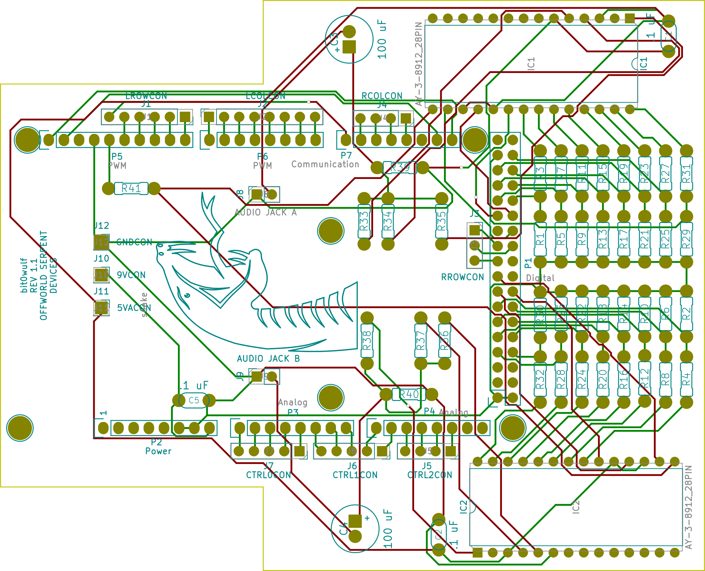

The bit0wulf is a DIY chiptune synth that uses keyboard switches
and an Arduino Mega 2560 Rev3 to command two AY-3-8912 chips. It is currently in progress,
(I still need to perform a first assembly) but you can view a sneak-peek
of some designs below!
Figure 1
bit0wulf board 0 PCB (contains keys, LEDs, potentiometers and LED drivers)

Figure 2
bit0wulf board 1 PCB (contains the AY-3-8912 chips, the audio out section, and is also an Arduino Mega 2560 Rev 3 shield)